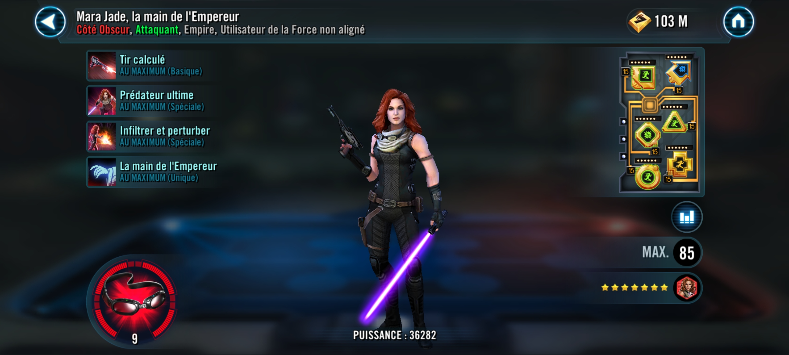

Mara Jade, The Emperor's Hand
Dark Side force user Attacker who uses her allies to boost her own power and supports Emperor Palpatine
Dark Side force user Attacker who uses her allies to boost her own power and supports Emperor Palpatine

Deal Special damage to target enemy twice and inflict Daze for 2 turns. If Emperor Palpatine is the Leader, he assists if it's Mara Jade's turn; otherwise, a random ally with Useful Pawn assists dealing 50% less damage.
Dispel all buffs and inflict Stun and Vulnerable for 1 turn on target enemy. Then, deal Special damage to all enemies and inflict Tenacity Down for 1 turn. This ability deals double damage to Shocked enemies and Jedi.
Deal Special damage to all enemies and inflict Offense Down, Shock, and Stagger for 2 turns. Mara Jade gains Stealth for 2 turns and 1.25% Turn Meter for each debuff inflicted by this ability. If Emperor Palpatine is the leader, he also gains 1.25% Turn Meter for each debuff inflicted by this ability.
If Emperor Palpatine is in the Leader slot at the start of the encounter, Empire and Sith allies have +20% Offense and Potency; otherwise, all other Dark Side allies gain Useful Pawn until the end of the encounter, which can't be copied or dispelled. Mara Jade has +10% Critical Chance, Critical Damage, and Offense for each ally with Useful Pawn. At the start of Mara Jade's turns, she gains a stack of Loyal Hand (max 20 stacks) until the end of the encounter. If Emperor Palpatine is in the Leader slot, she also gains a stack of Loyal Hand at the start of his turns.
If Jedi Knight Luke Skywalker is on the enemy squad: Mara Jade Blinds Jedi Knight Luke Skywalker for 1 turn at the start of her turn, which can't be evaded or resisted.
Useful Pawn: -5% Critical Chance, Critical Damage, and Offense
Loyal Hand: +10% Max Protection and Offense
Omicron Boost : While in Territory Wars: At the start of battle, if the enemy Leader is not a Galactic Legend they lose 100% Protection, 50% Max Protection, and Mara Jade gains 100% Turn Meter. Whenever an enemy unit is defeated, all allies gain 20% Max Protection and Mara Jade inflicts Vulnerable for 1 turn on a random enemy, which can't be evaded or resisted.